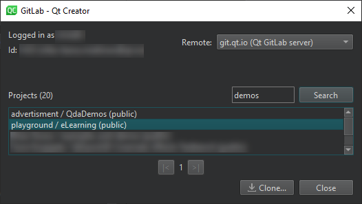
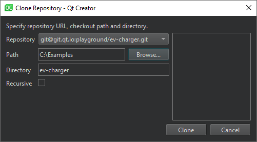

Using GitLab
GitLab is a DevOps tool developed by GitLab. You can clone projects from GitLab servers and use Git to manage your local and remote repositories.
To enable the experimental GitLab plugin, select Help > About Plugins > Version Control > GitLab. Then select Restart Now to restart Qt Creator and load the plugin.
To use GitLab, you must create a connection to the GitLab server and clone the projects you want to work on. You can also link previously cloned projects to GitLab in the project settings. This enables you to receive event notifications in the Version Control pane.
Connecting to GitLab Servers
To connect to a GitLab server, you need to specify the server host name and port number, as well as an access token that you create in GitLab for Qt Creator. The permission scope of the token must be at least read_api or api.
To specify connections to GitLab servers, select Edit > Preferences > Version Control > GitLab:

To add GitLab servers:
- Select Add to open the Add Server dialog:

- In Host, enter the host name of the GitLab server.
- In Description, enter a free-form text that is displayed in the GitLab settings of a linked project.
- In Access token, enter the access token you created for Qt Creator in the GitLab server, in Preferences > Access Tokens.
- In Port, enter a port number.
- Deselect the HTTPS check box to use an HTTP connection instead of a secure connection.
- Select Add to create the connection.
In the GitLab tab, curl displays the path to the curl tool used for HTTP connections. You can specify another path to use another instance of the tool than the one found by Qt Creator.
To edit the selected connection, select Edit.
To remove the selected connection, select Remove.
Cloning Projects
You can clone projects from the connected GitLab servers. Qt Creator reads your user name and ID from the access token and displays the available projects in each server. You can search for a particular project or browse projects in the list.
To clone projects from GitLab:
- Select Tools > GitLab to view a list of connected GitLab servers and available projects in each server:

- In Remote, select a GitLab server.
- In Projects, select the project to clone.
- Select Clone to open the Clone Repository dialog:

- In Repository, specify the URL of the repository.
- In Path, specify the path where to clone the repository.
- In Directory, specify the name of the directory for the cloned repository.
- Select the Recursive check box to also clone submodules of the repository.
- Select Clone to clone the project to the specified directory.
Qt Creator automatically opens the project. If the cloned project has several project files (such as CMakeList.txt, .pro, and .qbs), Qt Creator prompts you to select the one to open. If it does not contain a project file that Qt Creator can open, select File > New Project > Import Project > Import Existing Project to import the project as a generic project. For more information, see Using Project Wizards.
Linking Projects with GitLab
Link a project with a GitLab token to receive notifications on events, such as merge requests, issues, or comments, in the Version Control pane. The information is fetched every 15 minutes. Only events that occurred after the last time you logged into GitLab are displayed when you open the project for the first time. Subsequently, events that occurred after the last successful fetch are listed.
To link with GitLab:
- In the Projects mode, select GitLab to view the GitLab settings for the currently active project:

- In Host, select the URL of the GitLab server.
- In Linked GitLab configuration, select the GitLab server settings to use.
- Select Link with GitLab to receive event notifications in the Version Control pane.
To test the connection to the host using the access token specified in the GitLab configuration, select Test Connection.
To stop the reception of event notifications, select Unlink from GitLab.